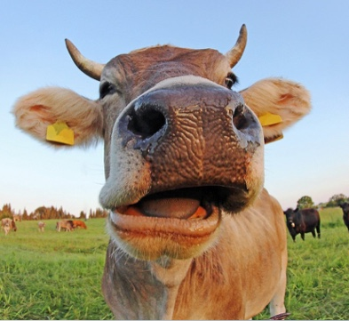
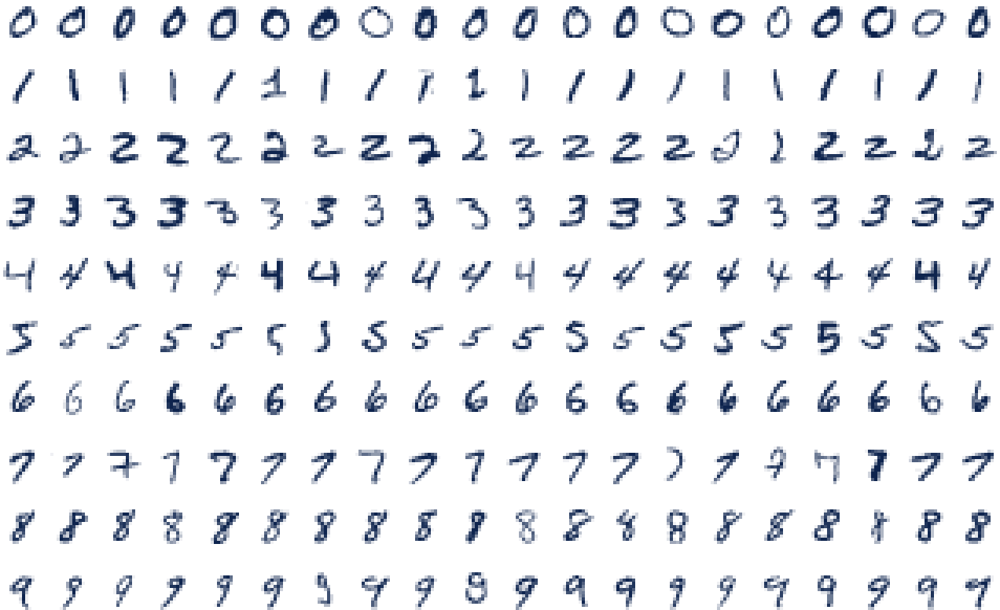
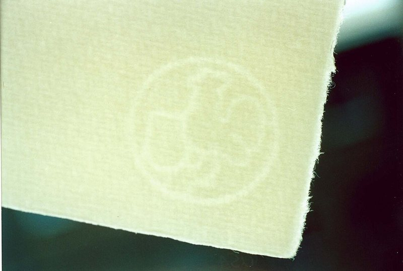
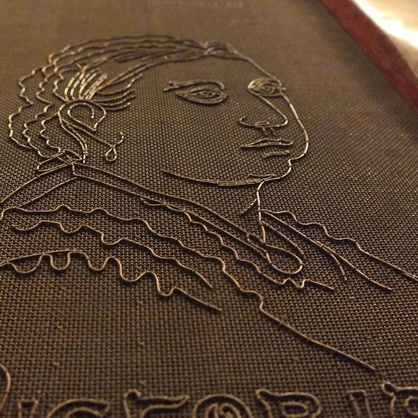
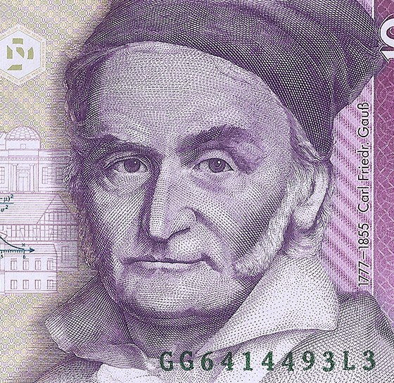
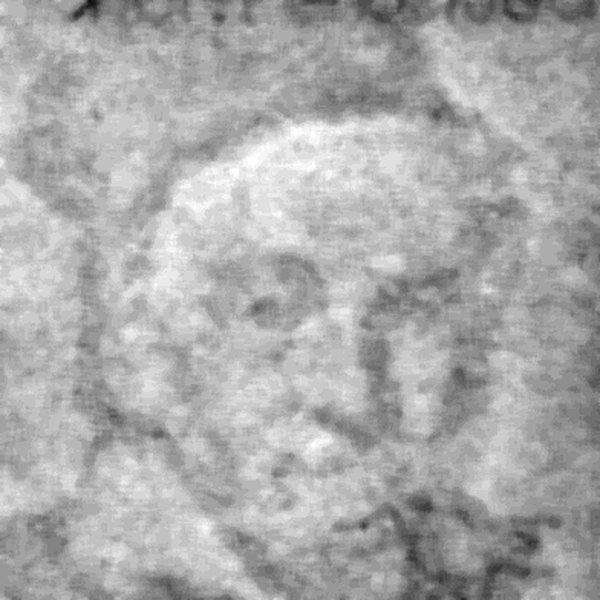
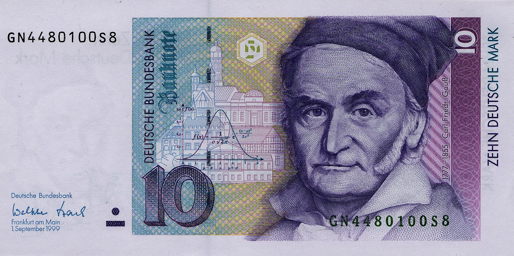
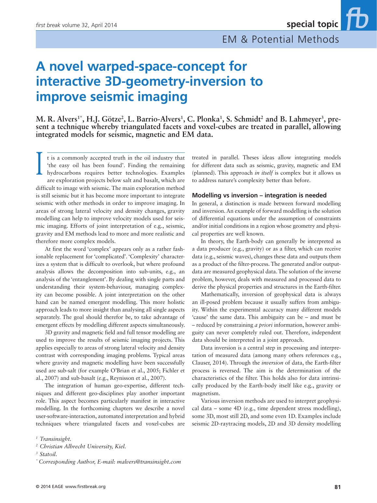
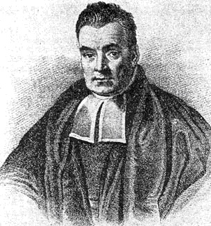
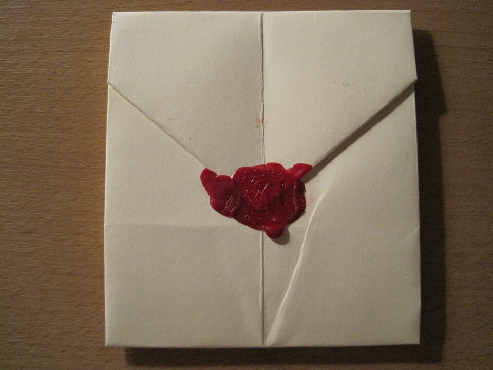

Good morning!
Nur das Schöne wird die Welt retten!
Fjodor Dostojewski
Nicht verzagen, Doc Alvers fragen!
Informatik — Künstliche Intelligenz
Wie Claude, Gemini & Co. ihre Texte markieren — und wie man es nachweist
Nicht verzagen, Doc Alvers fragen!
Ruminations
Wiederkäuen, was wir schon wissen

Nicht verzagen, Doc Alvers fragen!
So lernt ein Netz: 5 + 2 = 7
Eingaben
Ausgabe
Trainingsdatum
Fehler
Das Netz übt sechs Summen: 5 + 2, 3 + 4, 1 + 6, 6 + 1, 2 + 2, 4 + 3. Am Ende sind beide Gewichte 1 — es kann addieren.
Nicht verzagen, Doc Alvers fragen!
Nicht verzagen, Doc Alvers fragen!
Die Gewichte sind zufällig – die Antwort ist es trotzdem nicht.
MNIST ist die berühmteste Sammlung handgeschriebener Ziffern, zusammengestellt 1994 von Yann LeCun, Corinna Cortes und Christopher Burges, veröffentlicht 1998.
So verschieden schreiben Menschen: 200 Ziffern aus MNIST, eine Reihe je Ziffer von 0 bis 9.

Es sagt immer nur das „nächste Wort“ voraus.
Dazu liefert es für jedes mögliche Wort eine Wahrscheinlichkeit.
Das nächste Wort wird zufällig ausgelost: wahrscheinliche Wörter oft, unwahrscheinliche selten.
Deshalb gibt es auf dieselbe Frage jedes Mal eine etwas andere Antwort.
Oft passen mehrere Wörter fast gleich gut.
Genau dieser Spielraum ist der Platz für das Wasserzeichen.
Dass ich dich kennengelernt habe, ist das größte Glück in meinem Leben. Du hast mein Leben verändert. Ich liebe …dich. ❤️
Nicht verzagen, Doc Alvers fragen!
Das gelernte Sprachmodell
Gewichte aus dem Training, jetzt fest
VOM KORPUS GELERNT
100 %
Nicht verzagen, Doc Alvers fragen!
Das gelernte Sprachmodell
Gewichte aus dem Training, jetzt fest
VOM KORPUS GELERNT
100 %
Dein Prompt
„Was ist die Hauptstadt von Deutschland?“
Die Antwort
Berlin
ist
die
Hauptstadt
von
Deutschland.
Was ist die Hauptstadt von Deutschland?
Berlin
Berlin ist
Berlin ist die
Berlin ist die Hauptstadt
Berlin ist die Hauptstadt von
Berlin ist die Hauptstadt von Deutschland.
Der ganze Text geht jedes Mal neu hinein
Die Antwort steht nirgends gespeichert: Sie entsteht Wort für Wort aus dem Gelernten.
Nicht verzagen, Doc Alvers fragen!
KI-erstellte Texte sind schwer zu identifizieren. Daher benötigt man ein Verfahren, um KI-generierte von nicht-KI-generierten Texten zu unterscheiden.
Nicht verzagen, Doc Alvers fragen!
Kapitel 01
Ein Wasserzeichen, das man schwer sieht und das schwer zu fälschen ist
Wasserzeichen im Büttenpapier von Hahnemühle: unsichtbar, bis Licht hindurchfällt — Foto: Hahnemühle PR, CC BY-SA 3.0, Wikimedia Commons
Nicht verzagen, Doc Alvers fragen!
Im Geldschein: gegen das Licht gehalten, erscheint ein Bild.
Einen Geldschein mit Wasserzeichen zu fälschen, ist schwer.
Unauffällig für alle, eindeutig für den Prüfer
Ein KI-Text hat kein Papier und kein Bild — nur Wörter.
Wie versteckt man ein Wasserzeichen in Wörtern, ohne den Text zu "verderben"?
Nicht verzagen, Doc Alvers fragen!
Beim Schöpfen liegt ein Drahtbild auf dem Sieb.
Dort bleibt weniger Papierbrei hängen — das Papier wird dünner.
Gegen das Licht scheint die dünne Stelle heller.
Das Wasserzeichen ist Teil des Papiers, nicht aufgedruckt.
Beim "Wasserzeichen" in KI-Text genauso: das Wasserzeichen entsteht beim Schreiben, nicht danach.

Nicht verzagen, Doc Alvers fragen!
Ab 3. November 2026 markiert Anthropic auch ältere KI-Modelle mit Wasserzeichen.
Neuere Modelle wie Claude Opus 5.5 tragen das Wasserzeichen schon heute.
Das Wasserzeichen ist ein unmerkliches Muster in der Wortwahl.
Kein zusätzliches Schriftzeichen, kein zusätzliches Wort wird in den Text eingefügt.
Die Aussagen und die sprachliche Qualität des Textes bleiben gleich.
Das Wasserzeichen verrät nichts darüber, welcher Nutzer den Text in Auftrag gegeben hat.
Es kann nur erkannt werden, dass der Text von einer künstlichen Intelligenz erstellt wurde.
Nicht verzagen, Doc Alvers fragen!
?
Diese Vorhersage wird für den gesamten Wortschatz gemacht.
Heute ist das Wetter …
schön
sonnig
herrlich
warm
gut
mild
Nicht verzagen, Doc Alvers fragen!
| Wort | Punktzahl | Prozent | |
|---|---|---|---|
| schön | 3,18 | 24 | 24 % |
| sonnig | 3,04 | 21 | 21 % |
| herrlich | 2,64 | 14 | 14 % |
| warm | 2,48 | 12 | 12 % |
| gut | 2,20 | 9 | 9 % |
| mild | 1,79 | 6 | 6 % |
| ⋮ | ⋮ | ⋮ | ⋮ |
| alle Wörter | 100 | 100 % |
Das Netz hat einen Ausgang pro Wort im Wortschatz, bei echten KIs bis zu 200.000. Jeder Ausgang liefert eine Punktzahl (Fachwort: Logit). Daraus bekommt jedes Wort „Lose“, sein Prozent ist sein Anteil an allen „Losen“. Das Wasserzeichen rechnet +2 auf die Punktzahl der grünen Wörter: -mal so viele „Lose“.
Ein geheimer Schlüssel legt für jedes Wort fest, welche Wörter danach grün sind.
Grün ist immer die Hälfte des Wortschatzes, der Rest ist rot.
Beim Auslosen bekommen grüne Wörter einen Bonus.
Unter den passenden Wörtern ist fast immer ein grünes, deshalb bleibt der Text gut.
Nach jedem Wort wird neu geteilt. Ohne Schlüssel sieht das aus wie reiner Zufall.
Nicht verzagen, Doc Alvers fragen!
Idee: Die KI soll heimlich bestimmte Wörter bevorzugen, die „grünen“. Welche das sind, weiß nur, wer den geheimen Schlüssel hat.
Dieser Schlüssel legt für jedes Wort fest, welche Wörter danach grün werden.
Jedes Wort hat eine feste Zahl: z. B. Wetter 12, schön 1, warm 2, gut 3, sonnig 6, herrlich 7, mild 8, Schlüssel 7.
Rechnung: Zahl des vorherigen Worts · Schlüssel + Zahl des nächsten Worts
Nur die letzte Ziffer des Ergebnisses wird genutzt: 0 bis 4 grün, 5 bis 9 rot. ?
| Nach „Wetter“: 12 · 7 = 84 | ||
|---|---|---|
| sonnig | 84 + 6 = 90 | grün |
| herrlich | 84 + 7 = 91 | grün |
| mild | 84 + 8 = 92 | grün |
| schön | 84 + 1 = 85 | rot |
| warm | 84 + 2 = 86 | rot |
| gut | 84 + 3 = 87 | rot |
| Nach „sonnig“: 6 · 7 = 42 | ||
|---|---|---|
| schön | 42 + 1 = 43 | grün |
| warm | 42 + 2 = 44 | grün |
| mild | 42 + 8 = 50 | grün |
| gut | 42 + 3 = 45 | rot |
| sonnig | 42 + 6 = 48 | rot |
| herrlich | 42 + 7 = 49 | rot |
So wird für alle Wörter im Wortschatz gerechnet, bei echten KIs bis zu 200.000.
Nicht verzagen, Doc Alvers fragen!
Das ist eine Festlegung, man hätte auch anders rechnen können. Sie ist aber sinnvoll:
vorheriges Wort
Wetter
geheimer Schlüssel
7
Rechnung
Wetter
12·7=84
sonnig
84+6=90
→ grün
herrlich
84+7=91
→ grün
mild
84+8=92
→ grün
schön
84+1=85
→ rot
warm
84+2=86
→ rot
gut
84+3=87
→ rot
sieht aus wie Zufall
grüne Liste
sonnig · herrlich · mild · …
eine Hälfte aller Wörter
rote Liste
schön · warm · gut · …
die andere Hälfte
Für jedes neue Wort wird neu gerechnet.
Nicht verzagen, Doc Alvers fragen!
Ohne Wasserzeichen
schön
sonnig
herrlich
warm
gut
mild
Mit Wasserzeichen
schön
sonnig
herrlich
warm
gut
mild
Bonus für Grün
Die Rangfolge ändert sich: Rote Wörter werden selten, grüne häufig — und jedes davon passt in den Satz.
Nicht verzagen, Doc Alvers fragen!
Ohne Wasserzeichen hat jedes Wort so viele „Lose“, wie es Prozent hat: zusammen 100.
Jedes grüne Wort bekommt auf seine Punktzahl (Logit) einen Zuschlag von 2 (einstellbar). Seine „Lose“ wachsen um den Faktor .
Der Bonus: Jedes grüne Wort bekommt etwa 7,4-mal so viele „Lose“, rote behalten ihre.
Gezogen wird aus allen 407 „Losen“: sonnig hat 155 davon, das sind 38 %.
Das Wort „schön“ verliert keine „Lose“. Es „geht nur unter“, weil die grünen viele „Lose“ dazubekommen.
| Wort | vorher | Bonus | nachher | Chance |
|---|---|---|---|---|
| schön | 24 | – | 24 | 6 % |
| sonnig | 21 | · 7,4 | 155 | 38 % |
| herrlich | 14 | · 7,4 | 103 | 25 % |
| warm | 12 | – | 12 | 3 % |
| gut | 9 | – | 9 | 2 % |
| mild | 6 | · 7,4 | 44 | 11 % |
| alle anderen | 14 | ½ · 7,4 | 59 | 14 % |
| zusammen | 100 | 407 | 100 % |
Mehr Bonus heißt deutlicheres Wasserzeichen, aber eher schlechtere Wortwahl.
Nicht verzagen, Doc Alvers fragen!
Ein Mensch schreibt:
4
Am
4·7+9=37
Wochenende
9·7+5=68
fahren
5·7+15=50
wir
15·7+16=121
mit
16·7+13=125
dem
13·7+10=101
Fahrrad
10·7+17=87
an
17·7+18=137
den
18·7+14=140
See
5 von 10 Wörtern grün — wie beim Münzwurf
Die KI mit Wasserzeichen schreibt:
11
Bei
11·7+23=100
sonnigem
23·7+12=173
Wetter
12·7+21=105
lohnt
21·7+24=171
sich
24·7+22=190
ein
22·7+19=173
Ausflug
19·7+26=159
zum
26·7+30=212
nahen
30·7+31=241
Badesee
8 von 10 Wörtern grün — auffällig viele
Nicht verzagen, Doc Alvers fragen!
| Wort | Zahl | Wort | Zahl | Wort | Zahl |
|---|---|---|---|---|---|
| schön | 1 | Fahrrad | 10 | Ausflug | 19 |
| warm | 2 | bei | 11 | lohnt | 21 |
| gut | 3 | Wetter | 12 | ein | 22 |
| am | 4 | dem | 13 | sonnigem | 23 |
| fahren | 5 | See | 14 | sich | 24 |
| sonnig | 6 | wir | 15 | zum | 26 |
| herrlich | 7 | mit | 16 | nahen | 30 |
| mild | 8 | an | 17 | Badesee | 31 |
| Wochenende | 9 | den | 18 |
Das sind alle 26 Wörter aus unseren Rechnungen mit ihrer festen Zahl. Der Schlüssel ist 7. Bei echten KIs hat jedes Wort so eine Zahl, bis zu 200.000 Stück.
Schlüssel 7 – gerechnet wird wie eben:
Zahl des vorherigen Worts · 7 + Zahl des Worts
Letzte Ziffer 0 bis 4 grün, 5 bis 9 rot – erstes Wort: nur seine Zahl
Satz A: „Am Morgen trinke ich gern einen Kaffee“
Satz B: „Der Hund läuft schnell durch den Park“
Färbt jedes Wort. Wie viele sind grün? Welcher Satz könnte von einer KI mit Wasserzeichen sein?
A: Am Morgen trinke ich gern einen Kaffee → 3 von 7 grün: wie beim Münzwurf
B: Der Hund läuft schnell durch den Park → 6 von 7 grün: auffällig – bei 7 Wörtern noch kein Beweis
| Satz A | Satz B | ||
|---|---|---|---|
| Wort | Zahl | Wort | Zahl |
| Am | 4 | Der | 20 |
| Morgen | 34 | Hund | 32 |
| trinke | 27 | läuft | 36 |
| ich | 35 | schnell | 25 |
| gern | 33 | durch | 39 |
| einen | 38 | den | 18 |
| Kaffee | 29 | Park | 28 |
Nicht verzagen, Doc Alvers fragen!
| Satz A | ||
|---|---|---|
| Am4 | erstes Wort4 | grün |
| Morgen34 | 4·7+34=28+34=62 | grün |
| trinke27 | 34·7+27=238+27=265 | rot |
| ich35 | 27·7+35=189+35=224 | grün |
| gern33 | 35·7+33=245+33=278 | rot |
| einen38 | 33·7+38=231+38=269 | rot |
| Kaffee29 | 38·7+29=266+29=295 | rot |
| zusammen | 3 von 7 | |
| Satz B | ||
|---|---|---|
| Der20 | erstes Wort20 | grün |
| Hund32 | 20·7+32=140+32=172 | grün |
| läuft36 | 32·7+36=224+36=260 | grün |
| schnell25 | 36·7+25=252+25=277 | rot |
| durch39 | 25·7+39=175+39=214 | grün |
| den18 | 39·7+18=273+18=291 | grün |
| Park28 | 18·7+28=126+28=154 | grün |
| zusammen | 6 von 7 | |
Kapitel 02
Grüne Wörter zählen
Nicht verzagen, Doc Alvers fragen!
Der Prüfer hat den Schlüssel und färbt jedes Wort nach: grün oder rot.
Text von einem Menschen: ungefähr die Hälfte grün — wie beim Münzwurf
KI-Text mit Wasserzeichen: deutlich mehr als die Hälfte
Aber auch ein Mensch kann zufällig viele grüne Wörter erwischen.
Die Frage ist also: Wie unwahrscheinlich ist das Ergebnis?
Die Antwort gibt die Statistik: Wie oft käme so ein Ergebnis allein durch Zufall heraus?
Nicht verzagen, Doc Alvers fragen!
Willkürliche Schwelle:
128 grüne
Beispiel: ein KI-Text
150 von 200 grün
Texte von Menschen
86 bis 114
Zufällig erreicht ein
Mensch das nur in etwa
1 von 31.600
Fällen.
100 = 50 % von 200
Zufällig erreicht ein
Mensch das nur in etwa
1 von 1,3 Billionen
Fällen.
Rund 9.000-mal seltener
als der Lotto-Jackpot.
etwa 1 von 40
etwa 1 von 40
z. B. ab hier Wasserzeichen-KI-Text



Auf dem 10-DM-Schein:
Gauß mit seiner Kurve.
Sein Kopf war auch
das Wasserzeichen.
Häufigkeit
Anzahl grüner Wörter in einem Text mit 200 Wörtern
{G} grüne: zufällig nur in
etwa 1 von {N} Fällen.
Nicht verzagen, Doc Alvers fragen!
Der z-Wert sagt, um wie viele Streuungen ein Ergebnis über dem Erwarteten liegt.
| Wörter | davon grün (75 %) | so oft wäre es Zufall |
|---|---|---|
| 20 | 15 | 1 von 80 |
| 40 | 30 | 1 von 1.300 |
| 100 | 75 | 1 von 3,5 Millionen3.500.000= |
| 200 | 150 | 1 von 1,3 Billionen1.300.000.000.000= |
| 400 | 300 | 1 von 130 Trilliarden130.000.000.000.000.000.000.000= |
| 4.700 | 3.525 | 1 von 102691 mit 269 Nullen= |
4.700 Wörter:
mein Artikel in
First Break, 2014

Ein Satz oder eine kurze Antwort ist nicht sicher prüfbar.
Ab etwa 100 Wörtern wird es eindeutig.
Zum Vergleich: Das Universum hat etwa 1080 Atome.
Nicht verzagen, Doc Alvers fragen!
Kapitel 03
Claude, Gemini und das Gesetz
Nicht verzagen, Doc Alvers fragen!
Verfahren nach dem Vorbild von SynthID-Text (Google DeepMind, 2024)
Eingebaut im Modell — gilt in jeder App und auf jeder Cloud
Das Wasserzeichen reist mit: Kopieren und Einfügen ändert nichts.
Das genaue Verfahren ist geheim — ein Prüfwerkzeug gibt es erst im Test.
Bilder und Dateien bekommen stattdessen signierte Herkunftsdaten (C2PA).
Claude schreibt
Bei sonnigem Wetter lohnt sich ein Ausflug zum nahen Badesee.
Word
Bei sonnigem Wetter lohnt sich ein Ausflug zum nahen Badesee.
Bei sonnigem Wetter lohnt sich ein Ausflug zum nahen Badesee.
Bei sonnigem Wetter lohnt sich ein Ausflug zum nahen Badesee.
kopiert
Das Grün bleibt überall gleich: Es steckt in den gewählten Wörtern, nicht in der Datei.
Nicht verzagen, Doc Alvers fragen!
sonnig = 6
schön = 1
herrlich = 7
warm = 2
12·7+6=90
12·7+1=85
12·7+7=91
12·7+2=86
sonnig
herrlich
12·9+6=114
12·9+7=115
sonnig
„Wetter“ = 12
Runde 1
Schlüssel 7
Runde 2
Schlüssel 9
kommt in den Text
So entstehen und : vorheriges Wort · Schlüssel + eigenes Wort. Letzte Ziffer 0 bis 4 ergibt , 5 bis 9 ergibt .
Das Wort mit der kommt weiter, bei Gleichstand entscheidet der Zufall. Darum ist die im fertigen Text auffällig häufig.
Nicht verzagen, Doc Alvers fragen!
Kurze Texte: zu wenige Wörter zum Zählen
Feste Antworten ohne Spielraum: „Die Hauptstadt Frankreichs ist Paris.“
Übersetzen in eine andere Sprache
Hin und her übersetzt: Das Wasserzeichen wird schwächer. ?
Umschreiben — von Hand oder von einer anderen KI
Nicht verzagen, Doc Alvers fragen!
Deutsch, Englisch, Deutsch: So viele Wörter sind grün. Zufall wären 50 %.
| Text | vorher | nachher | Unser Lab sagt |
|---|---|---|---|
| Goethe | 71 % | 63 % | Auffällig |
| Dickens | 78 % | 64 % | Wasserzeichen erkannt |
| Zeitung | 64 % | 56 % | Sieht aus wie Zufall |
Mit dem richtigen Schlüssel gelesen: 148 von 200 Wörtern grün, 52 rot
Soziale Medien prägen heute den Alltag vieler Jugendlicher. Schon morgens greifen viele zuerst zum Smartphone, um Nachrichten zu lesen und neue Beiträge zu entdecken. Plattformen wie Instagram, TikTok oder WhatsApp verbinden Freunde, auch wenn sie weit voneinander entfernt wohnen. Das hat klare Vorteile: Man bleibt in Kontakt, teilt Erlebnisse und findet schnell Gleichgesinnte. Gleichzeitig entstehen jedoch auch Probleme. Viele Nutzer verbringen täglich mehrere Stunden online und merken kaum, wie rasch die Zeit vergeht. Ständige Benachrichtigungen stören die Konzentration beim Lernen. Außerdem zeigen die Bilder im Netz meist nur die schönsten Momente. Wer sich dauernd mit makellosen Körpern und Traumurlauben vergleicht, fühlt sich schnell unzufrieden. Hinzu kommt die Frage, was mit den eigenen Daten geschieht. Jeder Klick wird gespeichert und ausgewertet, damit Werbung gezielter passt. Deshalb ist ein bewusster Umgang besonders wichtig. Jugendliche sollten feste Zeiten ohne Handy einplanen und Benachrichtigungen gezielt abschalten. Eltern und Schulen können dabei helfen, indem sie offen über Chancen und Risiken sprechen. Entscheidend ist, dass man die Plattformen nutzt, statt von ihnen genutzt zu werden. Wer kritisch bleibt und regelmäßig Pausen einlegt, kann die Vorteile genießen, ohne die Nachteile zu unterschätzen. Soziale Medien sind weder gut noch schlecht: Es kommt darauf an, wie wir sie verwenden.
Rot sind vor allem kleine Wörter ohne Spielraum („die“, „und“, „zu“: 44 der 52 roten). Färbung zur Veranschaulichung.
Nicht verzagen, Doc Alvers fragen!
Nicht verzagen, Doc Alvers fragen!
Wasserzeichen
Beim Schreiben absichtlich gesetzt
geprüft mit dem Schlüssel
Ergebnis mit berechneter Wahrscheinlichkeit
Prüfen kann nur, wer den Schlüssel hat
Einfache KI-Detektoren
Raten nachträglich aus dem Stil
Kein Schlüssel — nur eine Vermutung
viele Fehlalarme
Trifft besonders oft Nicht-Muttersprachler
Nicht verzagen, Doc Alvers fragen!
Artikel 50: KI-Inhalte müssen maschinenlesbar gekennzeichnet sein.
Stichtag 2. August 2026: alle neueren Claude-Modelle markieren ihre Texte.
Ab 3. November 2026 auch ältere Modelle, die Frist endet am 2. Dezember 2026.
Ziel: Desinformation und Deepfakes erkennbar machen
Das Wasserzeichen sagt nur „von einer KI“.
Es ist nicht möglich zu erkennen, welche Person gefragt hat.
Nicht verzagen, Doc Alvers fragen!
Kapitel 04
DeepSeek, Claude oder ChatGPT — geht das überhaupt?
Nicht verzagen, Doc Alvers fragen!
Stand: Oktober 2026
| Anbieter | Verfahren | seit | wer kann prüfen? |
|---|---|---|---|
| Anthropic (Claude) | Wortwahl-Muster nach SynthID-Text | Aug. 2026, ältere ab 3. Nov. | Anthropic, Test-API für wenige |
| OpenAI (ChatGPT) | „textGrain“, Wortwahl-Muster | Okt. 2026, nur in der EU | nur zugelassene Forschende |
| Google (Gemini) | SynthID-Text | 2024 | Verfahren offen (Open Source) |
| DeepSeek | Kennzeichnungspflicht in China | Sept. 2025 | Verfahren nicht öffentlich |
Jeder Anbieter hat seinen eigenen Schlüssel — prüfen kann er nur seine eigenen Texte.
Ein gemeinsames Prüfwerkzeug für alle gibt es nicht.
Nicht verzagen, Doc Alvers fragen!
Gedankenexperiment: alle drei Anbieter prüfen den Text mit ihrem Schlüssel.
Je Anbieter ein Faktor: Wie viel besser passt die Zählung zu „markiert“ als zu „Zufall“?
mit grünen von Wörtern bei Anbieter
„Keiner der drei“ (ein Mensch oder ein anderes Modell) bekommt den Faktor .
Der Satz von Bayes macht daraus Prozente:
Die im Nenner steht für „keiner der drei“.
Annahme: vorher sind alle vier gleich wahrscheinlich.

Nicht verzagen, Doc Alvers fragen!
Ein Aufsatz mit 200 Wörtern, so abgegeben, wie die KI ihn schrieb
jeder zählt mit seinem eigenen Schlüssel
Anthropic
148 von 200 grün
OpenAI
103 von 200 grün
DeepSeek
96 von 200 grün
Wer war's?
Anthropic
OpenAI
DeepSeek
keiner der drei
Klar: Claude von Anthropic.
Annahme: vorher alle vier gleich wahrscheinlich, markierter Text 75 % grün. Zählungen ausgedacht, Rechnung echt.
Nicht verzagen, Doc Alvers fragen!
Ein Absatz mit 80 Wörtern
jeder zählt mit seinem eigenen Schlüssel
Anthropic
42 von 80 grün
OpenAI
47 von 80 grün
DeepSeek
53 von 80 grün
Wer war's?
Anthropic
OpenAI
DeepSeek
keiner der drei
Ziemlich sicher DeepSeek — aber nicht ganz.
Annahme: vorher alle vier gleich wahrscheinlich, markierter Text 75 % grün. Zählungen ausgedacht, Rechnung echt.
Nicht verzagen, Doc Alvers fragen!
Eine Nachricht mit 40 Wörtern
jeder zählt mit seinem eigenen Schlüssel
Anthropic
26 von 40 grün
OpenAI
25 von 40 grün
DeepSeek
20 von 40 grün
Wer war's?
Anthropic
OpenAI
DeepSeek
keiner der drei
Nur eine Tendenz — kein Beweis.
Annahme: vorher alle vier gleich wahrscheinlich, markierter Text 75 % grün. Zählungen ausgedacht, Rechnung echt.
Nicht verzagen, Doc Alvers fragen!
Im Prinzip ja: jeder Schlüssel liefert eine Zählung, Bayes macht daraus Prozente.
Heute nein: die Schlüssel bleiben bei den Anbietern, es gibt kein gemeinsames Prüfwerkzeug.
Lange, unveränderte Texte: eindeutig — kurze oder umgeschriebene: nur eine Tendenz
25 % der Wörter durch Synonyme ersetzt: OpenAI erkennt nur noch 17 % der Texte.
Ganz ohne Wasserzeichen verrät der Stil das Modell: 97 % Treffer bei fünf Modellen.
Aber: 3 von 100 sind falsch. Für einen Vorwurf reicht das nicht.
Nicht verzagen, Doc Alvers fragen!
Die Schule hat keinen Schlüssel, und jede KI hat ihren eigenen.
Eine KI auf dem eigenen Rechner, etwa Qwen, setzt von sich aus kein Wasserzeichen.
Die EU-Pflicht trifft Anbieter, den Rechner zu Hause erreicht sie kaum.
„Nichts gefunden“ beweist nichts: Der Text kann trotzdem von einer KI sein.
Stil-Detektoren: 14 Werkzeuge getestet, keines zuverlässig (Weber-Wulff u. a., 2023).
OpenAI zog seinen Detektor 2023 zurück: Er fand nur 26 % der KI-Texte.
Und 9 % der Menschen-Texte hielt er für KI: In einer Klasse mit 24 wären das etwa 2 Schüler.
Texte von Nicht-Muttersprachlern gelten oft fälschlich als KI (Liang u. a., 2023).
EU-Kodex 2026: freiwillig, ein gemeinsames Prüfwerkzeug fehlt bisher.
Nicht verzagen, Doc Alvers fragen!
Ist es fair, dass nur der Anbieter prüfen kann?
Sollte eine Schule KI-Texte prüfen dürfen?
Wer einen KI-Text umschreibt: wessen Text ist das dann?
Warum ist offen angeben besser als verstecken?
Brauchen bald auch Menschen-Texte ein Echtheitszeichen?

Nicht verzagen, Doc Alvers fragen!
Ein Wasserzeichen im KI-Text ist keine Markierung, sondern Statistik: Die KI wählt ein bisschen zu oft die „grünen“ Wörter — und nur wer den Schlüssel hat, kann nachzählen.
Merksatz
Nicht verzagen, Doc Alvers fragen!
Anthropic: Mail „Text watermarking begins November 3, 2026“ (28.10.2026) und Hilfeseite „How Claude marks AI-generated content“
J. Kirchenbauer u. a.: A Watermark for Large Language Models, ICML 2023 (arXiv 2301.10226)
S. Dathathri u. a.: Scalable watermarking for identifying large language model outputs, Nature 634, 2024 (SynthID-Text)
W. Liang u. a.: GPT detectors are biased against non-native English writers, Patterns 4, 2023
D. Weber-Wulff u. a.: Testing of detection tools for AI-generated text, International Journal for Educational Integrity 19, 2023 (arXiv 2306.15666)
EU-Kommission: Code of Practice on marking and labelling AI-generated content, 10.6.2026; OpenAI: Mitteilung zum AI Classifier, 20.7.2023
M. Sun u. a.: Idiosyncrasies in Large Language Models, ICML 2025 (arXiv 2502.12150)
Beispiel-Fachartikel: M. R. Alvers u. a.: A novel warped-space concept for interactive 3D-geometry-inversion, First Break 32(4), 2014
Texte im Lab: geschrieben vom Sprachmodell Qwen, lokal auf dem Rechner, Stil nach Vorgabe
Nicht verzagen, Doc Alvers fragen!
OpenAI: Ankündigung „textGrain“ für ChatGPT und Codex in der EU, 5.10.2026 (nach Presseberichten)
China: Maßnahmen zur Kennzeichnung KI-erzeugter Inhalte und Norm GB 45438-2025, gültig seit 1.9.2025
Verordnung (EU) 2024/1689 (AI Act), Artikel 50
Fotos: Wikimedia Commons — 50-Euro-Schein (gemeinfrei), Schöpfsieb (Yamaplos, CC BY-SA 4.0), Büttenpapier (Hahnemühle PR, CC BY-SA 3.0), Plenarsaal des Europäischen Parlaments (Ausschnitt, Sebastian Wallroth, CC BY 4.0), Thomas Bayes (gemeinfrei), Wachssiegel (Contrafool, CC BY-SA 3.0), 10-DM-Schein (Ausschnitt: Deutsche Bundesbank, Scan NobbiP, CC BY-SA 3.0; ganzer Schein und Wasserzeichen mit verstärktem Kontrast: Deutsche Bundesbank)
Ziffern im Lab: MNIST von Y. LeCun, C. Cortes und C. J. C. Burges, CC BY-SA 3.0 (Auswahl von 3.300 Ziffern, verkleinert auf 14 · 14 Pixel)
MNIST-Geschichte: C. Yadav, L. Bottou: Cold Case: The Lost MNIST Digits, NeurIPS 2019 (arXiv 1905.10498); Wikipedia „MNIST database“ (NIST-Sammlungen von 1990 und 1992)
Mensch und Netz bei MNIST: D. Ciresan, U. Meier, J. Schmidhuber: Multi-column Deep Neural Networks for Image Classification, CVPR 2012 (arXiv 1202.2745)
Symbol „Neu“ im Ziffern-Lab: Feather Icons, MIT-Lizenz
Nicht verzagen, Doc Alvers fragen!